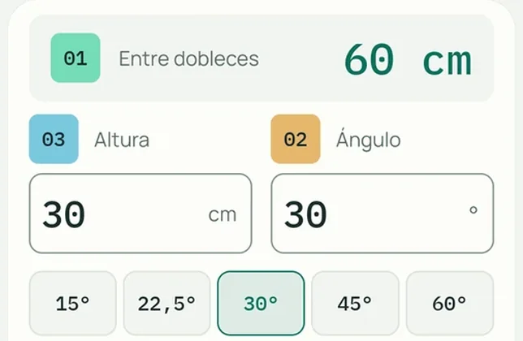
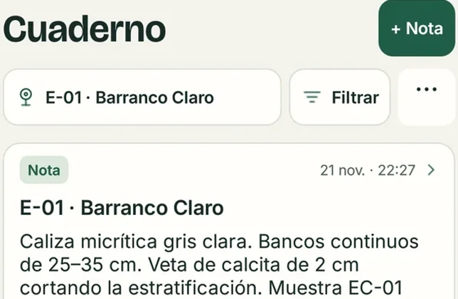

PeldaPlan
Cálculo de escaleras
Calcula peldaños y revisa el diseño de la escalera en 3D.
Cuatro herramientas de Gastry para calcular escaleras y dobleces, documentar obras y llevar el cuaderno geológico.
Cálculo de escaleras
Calcula peldaños y revisa el diseño de la escalera en 3D.

Informes de obra
Registra incidencias con fotos y exporta el informe a PDF.

Doblado de tubos
Calcula separaciones entre dobleces y pérdidas de alcance.

Cuaderno geológico
Registra afloramientos, medidas y fotos en un cuaderno de campo.